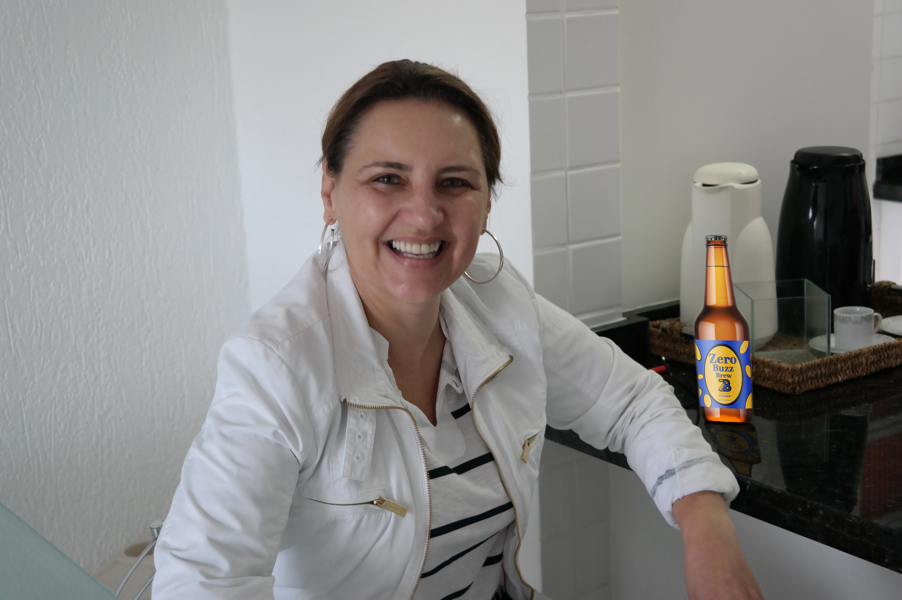
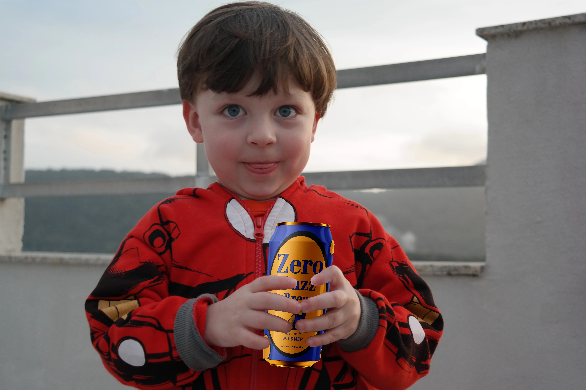
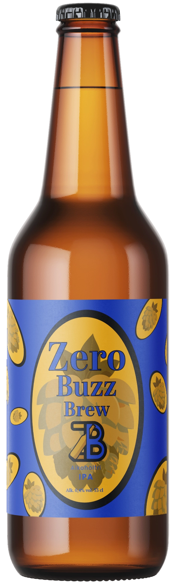

Hvorfor Alkoholfri Øl er Godt
Sundhedsfordele
Alkoholfri øl er blevet en populær drik blandt dem, der ønsker at nyde smagen af øl uden de negative effekter af alkohol. Hos ZeroBuzz, dit foretrukne microbryggeri for alkoholfri øl i Danmark, er vi stolte af at tilbyde en bred vifte af alkoholfri øl, der både smager godt og har mange fordele.
Lavere Kalorieindhold
Alkoholfri øl indeholder typisk færre kalorier end almindelig øl, hvilket gør det til et bedre valg for dem, der ønsker at holde øje med deres kalorieindtag. Ved at vælge alkoholfri øl fra ZeroBuzz, kan du nyde en velsmagende drik uden at bekymre dig om ekstra kalorier.
Mindre Risiko for Alkoholrelaterede Skader
Uden alkoholens negative virkninger reducerer alkoholfri øl risikoen for alkoholrelaterede sundhedsproblemer som leverskader og hjertesygdomme. Vores alkoholfri øl er brygget med den højeste standard for at sikre din sundhed.
Hydrering
Nogle alkoholfri øl indeholder elektrolytter, som kan hjælpe med at holde kroppen hydreret, især efter fysisk aktivitet. Prøv vores alkoholfri øl for en forfriskende og hydrerende oplevelse.
Sociale Fordele
Nyd Smagen uden At Blive Beruset
Du kan nyde den autentiske ølsmag uden at bekymre dig om at blive beruset, hvilket er ideelt til sociale arrangementer, hvor du vil være skarp og til stede. Med ZeroBuzz's udvalg af alkoholfri øl kan du være en del af fællesskabet uden alkoholens påvirkning.
Forbedret Søvnkvalitet
Uden alkohol i systemet vil du sandsynligvis opleve en bedre søvnkvalitet, hvilket betyder, at du kan vågne op frisk og udhvilet. Vores alkoholfri øl hjælper dig med at opretholde en sund søvnrytme.
Miljøfordele
Bæredygtighed
Produktion af alkoholfri øl kan være mere bæredygtig, da det kræver mindre energi at fremstille og reducerer spild af ressourcer. Hos ZeroBuzz er vi engageret i bæredygtig produktion og miljøvenlige metoder.
Alkoholfri øl tilbyder en bred vifte af fordele, der gør det til et fremragende valg for både sundheds- og miljøbevidste forbrugere. Det er en drik, der ikke kun smager godt, men også fremmer en sundere livsstil. Besøg ZeroBuzz i dag og oplev de mange fordele ved vores alkoholfri øl.
Hvordan Man Stadig Kan Være med til Festen uden At Drikke Alkohol

Vælg Alkoholfri Alternativer
At deltage i sociale arrangementer uden at drikke alkohol kan være en udfordring for nogle, men det behøver ikke at være det. Hos ZeroBuzz, dit foretrukne microbryggeri for alkoholfri øl i Danmark, har vi nogle tips til, hvordan du stadig kan være med til festen uden at drikke alkohol.
Alkoholfri Cocktails
Prøv at bestille eller lave dine egne alkoholfri cocktails. Der er mange spændende opskrifter, der kan tilfredsstille dine smagsløg uden at indeholde alkohol. På vores hjemmeside finder du inspiration til lækre alkoholfri drinks.
Alkoholfri Øl
Alkoholfri øl er et fantastisk alternativ til almindelig øl. Det smager næsten som det rigtige og giver dig mulighed for at deltage i fællesskabet uden alkohol. Prøv ZeroBuzz's udvalg af alkoholfri øl til din næste fest.
Fokus på Social Interaktion
Deltag i Samtaler
Engager dig i samtaler og lær nye mennesker at kende. At fokusere på de sociale aspekter af festen kan hjælpe dig med at føle dig inkluderet. Vær til stede og nyd samværet med venner og familie.
Spil og Aktiviteter
Deltag i festlege eller andre aktiviteter, der ikke kræver alkohol. Dette kan hjælpe dig med at have det sjovt og føle dig som en del af gruppen. Tag del i sjove aktiviteter og spil, der gør aftenen mindeværdig.
Personlig Komfort
Vær Ærlig
Vær åben om, hvorfor du ikke drikker. De fleste vil respektere dit valg og støtte dig. At være ærlig omkring dine valg kan gøre det lettere at undgå pres om at drikke.
Find En Støttepartner
Hvis du har en ven eller familiemedlem, der også ikke drikker, kan I støtte hinanden gennem aftenen. At have en allieret kan gøre det nemmere at navigere sociale situationer uden alkohol.
Sundhedsbevidsthed
Hold Øje med Dit Velbefindende
Fokusér på, hvor godt du har det fysisk og mentalt ved ikke at drikke alkohol. Dette kan styrke din beslutning og gøre det lettere at undgå alkohol i sociale sammenhænge. Nyd fordelene ved en sundere livsstil med ZeroBuzz's alkoholfri øl.
Ved at vælge alkoholfri alternativer, engagere dig socialt og være ærlig om dine valg, kan du nyde festen fuldt ud uden at drikke alkohol. Besøg ZeroBuzz for at finde dine favoritalkoholfri øl til næste sociale arrangement.
Forskellige Typer af Alkoholfri Øl Man Kan Få
Alkoholfri øl er ikke bare én type drik; der findes mange forskellige varianter, der hver tilbyder unikke smagsoplevelser. Hos ZeroBuzz, dit foretrukne microbryggeri for alkoholfri øl i Danmark, er vi stolte af at præsentere et bredt udvalg af alkoholfri øl.
Lager
Alkoholfri Lager
Denne type øl har en let, frisk smag og er en af de mest populære typer af alkoholfri øl. Den minder meget om traditionelle lagerøl, men uden alkohol. Prøv vores alkoholfri lager for en klassisk øloplevelse.
IPA
Alkoholfri IPA (India Pale Ale)
Kendt for sin markante humlesmag og bitterhed, er alkoholfri IPA et fremragende valg for dem, der elsker en kraftig øloplevelse. ZeroBuzz tilbyder en udsøgt alkoholfri IPA, der tilfredsstiller selv den mest krævende smagsløg.
Hvedeøl
Alkoholfri Hvedeøl
Denne type øl har en blødere og ofte lidt frugtagtig smag. Den er perfekt til dem, der foretrækker en mildere øl. Vores alkoholfri hvedeøl er en forfriskende og let drik, ideel til sommerdage.